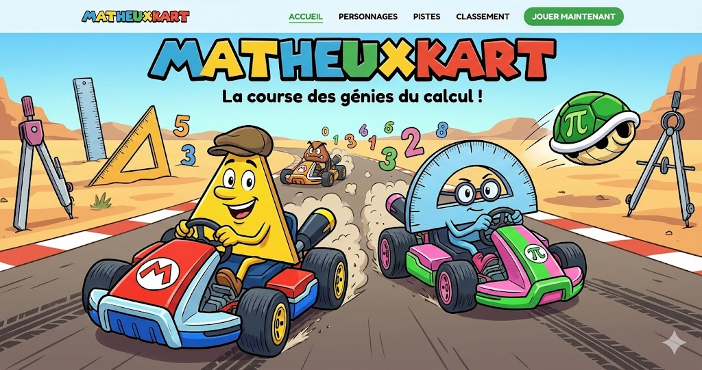

MatheuxKart
Jeu · Mathématiques
Un jeu de course mathématique pour réviser en s'amusant. Créé par François Fatoux.
Accéder27 outils IA pour l'éducation, non présents dans le livre. Mis à jour régulièrement avec de nouvelles découvertes.
Utilisez des modèles d'IA directement sur votre ordinateur, sans envoyer de données à l'extérieur. Idéal pour les personnels de direction et les établissements soucieux de la confidentialité.
Découvrez pourquoi l'IA locale est pertinente pour le monde éducatif : vie privée des élèves, RGPD, et indépendance vis-à-vis des services cloud.
Guide pratique pour installer et utiliser Ollama sur votre machine. Apprenez à exécuter des modèles comme Llama, Mistral ou Gemma en local.
Quelques applications créées en no code avec Gemini, Antigravity ou Google AI Studio. Elles partent d'un besoin de classe précis ; merci à François Fatoux de partager ces pistes et ces essais.

Jeu · Mathématiques
Un jeu de course mathématique pour réviser en s'amusant. Créé par François Fatoux.
AccéderExercices · Collège
Pour s'entraîner sur les automatismes avant la 3ème.
AccéderBrevet · Révisions
Spécialement conçu pour les révisions des automatismes du Brevet.
AccéderPréparation de cours · Écosystème anglophone
Une plateforme américaine qui regroupe des générateurs de séances, de quiz et de commentaires. À évaluer avec le cadre de données et les règles de votre établissement.
DécouvrirNotes · Documents · Bases de données
L'IA intégrée à Notion travaille dans vos pages et bases. Elle a surtout du sens si Notion est déjà votre espace de travail, plutôt que comme outil pédagogique autonome.
DécouvrirSupports de lecture · Adaptation
Génère des supports autour d'un texte ou d'un thème, avec des variantes de niveau. À relire avant diffusion : l'adaptation annoncée ne remplace pas votre connaissance de la classe.
DécouvrirPrésentation · Écriture · Participation
Un service de présentation et d'activités guidées, avec une place importante donnée à l'écriture des élèves. Vérifiez les modalités de compte avant de le proposer à une classe.
DécouvrirQuiz · Flashcards · Gamification
Gagner, Apprendre et Mémoriser avec l'IA. Outil de la Forge des Communs Numériques utilisant l'IA souveraine Albert pour générer quiz, flashcards et défis chronométrés. Hébergé sur les serveurs de l'Éducation nationale — aucune donnée ne quitte la France.
DécouvrirQuiz · Cartes mentales
Créez des cartes mentales et des quiz interactifs avec l'IA. Parfait pour la révision et la mémorisation.
DécouvrirSuite complète
Suite complète d'outils IA pour l'éducation : assistant IA, création de contenus, correction automatique. Hébergement européen.
DécouvrirChatbot IA
Chatbot IA développé en Suisse, respectueux de la vie privée. Idéal pour une première approche de l'IA avec les élèves.
DécouvrirAdministration
Tableau de bord local de professeur principal, conçu pour centraliser les informations de classe et préparer des synthèses avec un modèle de langage local. L'outil n'est pas distribué : la page explique les garde-fous nécessaires pour des données d'élèves.
Découvrir l'architectureQuiz · Images
Suite d'outils IA développés par l'EPFL. Génération de quiz, analyse d'images, et plus encore. Open source et gratuit.
DécouvrirQuiz · Flashcards · Mindmap
Plateforme tout-en-un pour la révision : flashcards générées par IA, cartes mentales automatiques, quiz adaptatifs.
DécouvrirDocuments LaTeX
Outil spécialisé pour les documents mathématiques et scientifiques. Analyse et génération de contenu LaTeX. *Compte OpenAI requis.
DécouvrirRecherche
Moteur de recherche IA pour la recherche académique. Synthèse automatique de documents et citations.
DécouvrirImages · QR codes
Générez des QR codes artistiques avec l'IA. Parfait pour créer des supports de cours originaux et attractifs.
DécouvrirLangues
Le mode conversation de Google Traduction permet des échanges oraux en temps réel. Idéal pour les cours de langues.
DécouvrirCréation d'activités · ELEA
Application web de la Forge Éducation pour créer des activités interactives avec IA. Prompts génératives prêtes à l'emploi pour ELEA et Magistère.
DécouvrirMémorisation · Révisions
Outil Primabord pour planifier automatiquement les rappels mémoriels et optimiser la mémorisation des élèves. Très accessible et modulable.
DécouvrirSynthèse · Révisions · Quiz
Transformez vos documents en podcast audio, guide de révision ou quiz.
Usages enseignants : préparer ses cours à partir d'un corpus,
résumer des ressources institutionnelles, créer des quiz de révision,
analyser des données d'évaluation et gagner du temps.
Nouveau (Fév 2026) : Génération de slides PowerPoint et révision par
prompt.
Chatbot · Comparaison
Accédez à tous les meilleurs modèles (Claude, GPT-4, Mistral) au même endroit.
Idéal pour comparer les réponses.
Complément : LMSYS Arena pour tester à
l'aveugle.
Comparateur de LLM · Souveraineté
L'outil officiel de l'État (beta.gouv) pour comparer les performances des modèles (dont les modèles souverains). Une alternative éthique et sécurisée.
DécouvrirCréation E-learning · H5P
Transformez n'importe quel document (PDF, vidéo, audio) en module d'apprentissage interactif (H5P) prêt à être intégré dans Moodle.
DécouvrirTexte à Parole (TTS)
Donnez vie à vos textes avec l'IA. Interface respectueuse des données, idéale pour l'accessibilité et les projets créatifs.
DécouvrirTutoriels vidéo
Créez des tutoriels vidéo et des guides pas à pas en quelques secondes. L'IA capture vos actions et génère la voix off explicative.
DécouvrirSchématisation · Visuels pédagogiques
Collez un texte et obtenez instantanément des schémas visuels pédagogiques (cycle de l'eau, schéma narratif, flux migratoires…). Idéal pour préparer des supports de cours clairs et prêts à projeter.
DécouvrirMathématiques · Automatismes
Plateforme créée par des enseignants pour entraîner les automatismes de la 6e à la 3e. Cinq niveaux de difficulté avec correction immédiate, suivi de classe (création de classes, tests notés, onglet d'évolution) et « Brevet des automatismes » au format de l'épreuve : neuf questions, vingt minutes, sans calculatrice. Gratuit, sans publicité.
DécouvrirRévisions · Jeux
Génère des mots croisés, mots mêlés, sudokus, bingos, labyrinthes, nonogrammes et autres jeux à partir de vos propres mots. Certains outils (mots croisés, mots mêlés, bingo) peuvent générer des mots ou des indices par IA. Gratuit avec publicités ; le téléchargement ne demande pas de compte, le partage en ligne en demande un. Site édité par Wyattly LLC : lisez sa politique de confidentialité avant d'y saisir des données d'élèves.
DécouvrirJeu de plateau · Culture de l'IA
Jeu de plateau collaboratif du Learning Lab de l'Université d'Orléans pour démystifier l'IA et acquérir son vocabulaire essentiel. Adapté du jeu des 7 familles « À la découverte de l'Intelligence Artificielle », avec des règles plus simples et plus rapides. Le kit complet est à imprimer (mis à jour le 1er octobre 2026) et une version Canva modifiable est proposée.
DécouvrirCours générés · Tuteur IA
Génère un cours à partir d'une instruction, avec leçons, visuels, audio et vidéo. Sujet libre, documents ajoutables. Chaque leçon peut être regardée (vidéo commentée), écoutée (format podcast) ou lue (avec schémas). Un tuteur IA, par chatbot ou en sessions vocales, répond aux questions de suivi.
DécouvrirMini-cours · Quiz
Génère un mini-cours avec quiz à partir d'une instruction. Leçons d'environ quatre minutes au format diapositives avec exercices, terminées par un quiz de rappel pour favoriser la mémorisation. Progression ludique : points d'expérience, séries et classements. Disponible sur le web et sur Android.
DécouvrirCompréhension guidée
Accompagne la compréhension d'un sujet en posant des questions ou en rédigeant une explication. Le mode guidé pose des questions pas à pas, avec des indices en cas de blocage. Images et graphiques dans les réponses ; création de flashcards (sans IA).
DécouvrirLangues · Oral
Pratique d'une langue avec un tuteur IA vocal, avec corrections et retour sur la prononciation. Langue cible et langue d'instruction au choix parmi 70 langues, trois niveaux, trois modes : Guidé, Conversation (uniquement dans la langue cible) ou Parcours.
DécouvrirLangues · Tuteur IA
Apprendre une langue avec un tuteur IA, des exercices, des cartes de révision et des articles de presse adaptés au niveau. L'application s'organise en cinq rubriques : Chat, Units (cours), Read (lecture), Words (vocabulaire) et Settings. Documentation publiée sur GitHub.
DécouvrirCours ludiques · Quiz
Transforme un sujet en cours personnalisé à partir de quiz : sections, niveaux, retour immédiat sur chaque réponse. Français pris en charge. Points d'expérience, séries de jours consécutifs et cinq styles pédagogiques au choix (« Professor », « Pirate »…).
DécouvrirPages · Tableau blanc · Présentations
Éditeur de pages, tableau blanc et générateur de présentations réunis, avec un chatbot doté d'une recherche internet. Pages (blocs, tableaux, tableurs, LaTeX, graphiques), tableau blanc (post-it, formes, cartes mentales) et présentations. Le chatbot agit sur l'espace de travail actif.
DécouvrirComparaison de modèles
Interroge plusieurs modèles de langage en même temps et met en évidence leurs points d'accord et de désaccord. Une même question peut partir vers cinq modèles : ChatGPT, Gemini, Claude, Sonar (Perplexity) et Grok. Une synthèse affiche un pourcentage d'accord.
DécouvrirRecherche · Vidéos YouTube
Répond à une question en cherchant en direct dans des vidéos YouTube, avec citation de passages. Il lit les sous-titres des vidéos trouvées et renvoie une réponse citée, avec un lien qui lance la vidéo au moment où l'information est dite. DeepContext permet de dialoguer avec sa propre bibliothèque de vidéos.
DécouvrirPrésentations
Agent de génération de présentations (« PPT agent », en bêta) intégré au chatbot Z.ai : il recherche des informations, propose un plan, la mise en page puis la génération finale. Un document peut être importé comme source. Export PDF et PPTX, modification par nouvelle instruction.
DécouvrirPrésentations
Génère des présentations à partir d'une instruction, en mode Agent ou Creative. Chaque diapositive peut être régénérée individuellement et des notes sont générées. Plusieurs modèles au choix pour le texte et pour l'image.
DécouvrirDocuments · Multimédia
Transforme un PDF en vidéo, présentation interactive, flipbook, page web, podcast vidéo, chatbot ou exposition 3D. Pour la vidéo : script généré par IA, voix off, sous-titres synchronisés, musique, effets et avatar présentateur optionnel.
DécouvrirMulti-modèles
Chatbot réunissant 70 modèles dans une seule interface (40 en version gratuite), avec choix manuel ou automatique et comparaison jusqu'à trois modèles. Recherche web avec citation des sources, mémoire des échanges. Génération d'images limitée à GPT Image 1 mini en version gratuite.
DécouvrirMulti-modèles · Agents
Réunit GPT, Claude, Gemini, DeepSeek, Kimi et Grok dans un même chatbot. Permet de créer des « Mates », des agents qui gardent leur propre mémoire. Exports PDF, TXT, Word, HTML. Disponible sur le web et l'App Store ; la version Google Play est annoncée « bientôt ».
DécouvrirConfidentialité
Assistant conversationnel axé sur la confidentialité, avec import de fichiers (PDF, CSV, Excel, DOC) et recherche web intégrée. Selon sa fiche de présentation, les échanges sont stockés localement dans le navigateur plutôt que sur un serveur, sans conservation ni utilisation pour l'entraînement des modèles.
DécouvrirFiches ajoutées en novembre 2026, rédigées par Claude Sonnet 5.5 (Anthropic) à partir des pages des éditeurs et des fiches de la lettre Une IA par jour. Les outils signalés « Non testé par l'auteur » sont décrits d'après ces fiches.